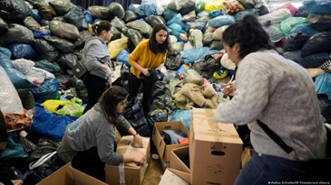

Corporate Social Responsibility (CSR)
Subhi Taha
Corporate Social Responsibility (CSR) quickly evolved to become a critical
component of each organization's business model and modus operandi of companies today. CSR
typically aligns with overarching business objectives and accedes with the proclivities of
key role-players within the firms' stakeholder map.
In this regard, organizations can use this strategy to help create utility by producing
social value and becoming active members of communities their stakeholders are participating
in. With that said, how does this dynamic shift when disaster strikes that same community
your stakeholder pool is comprised of?
In that context, it becomes pivotal that organizations play their part in aiding societies
to rehabilitate and recover from disasters, considering the role they hold as pillars of the
community. The responsibility can be translated into action through multiple different
methods.
- The organization can provide monetary assistance to help aid relief funds (Example:
Getir)
- The organization can raise awareness and bring attention to the disaster taking place
(Example: Kraft Heinz)
- The organization can modify business models to provide free services that can directly
assist disaster victims (Example: Pegasus Airlines)
- The organization can provide direct aid, including food packages, shelter, etc., to
provide the necessary support for victims (Example: Middle East Technical University)

(DW, 2023)
One prominent example of an organization providing assistance through multiple methods would be
Uber, who, after the recent disaster struck in Turkey, offered monetary assistance, facilitated
blood donations, and delivered donations to the affected regions by utilizing their services
(Uber, 2023)
In dire situations, such as in an earthquake, organizations within the affected region's domain
are expected to engage in CSR. Failure to do so would result in grave consequences for the
company and irreversibly damage the firm's corporate image, subsequently causing stakeholders to
divert from the firm. As such, the question bears, as a consumer, have organizations' approaches
shifted from being solely focused on being profit-making to now becoming part of a larger
community?
References:
DW. (2023, February 10). How to donate to earthquake aid efforts in Turkey and Syria – DW –
02/10/2023. dw.com. Retrieved April 11, 2023, from
https://www.dw.com/en/how-to-donate-to-earthquake-aid-efforts-in-turkey-and-syria/a-64667974
Uber. (2023, February 8). Our support for earthquake victims. Uber Newsroom. Retrieved April 11,
2023, from https://www.uber.com/newsroom/support-for-turkey
9.04.2023 16:00